Lo que Nelly heredó: el trabajo de una mujer y el futuro del mercado popular
Tecuani Mishpanti ·
Mientras el mercado continúa a oscuras, Nelly abre su puesto de gallinas indias, gallinas rojas y chumpipollos a las cinco de la mañana en el Mercado Central de San Salvador. Ha pasado 25 de sus 51 años trabajando en el mismo lugar, dentro del Edificio 8. Su madre, Teresa Rueda Valdivia, una de las fundadoras del mercado, fue quien le heredó el puesto. Pero Nelly no recibió solo un local: recibió un oficio completo. Heredó el destace, la selección de las aves y la relación con las granjas de crianza que abastecen el mercado.
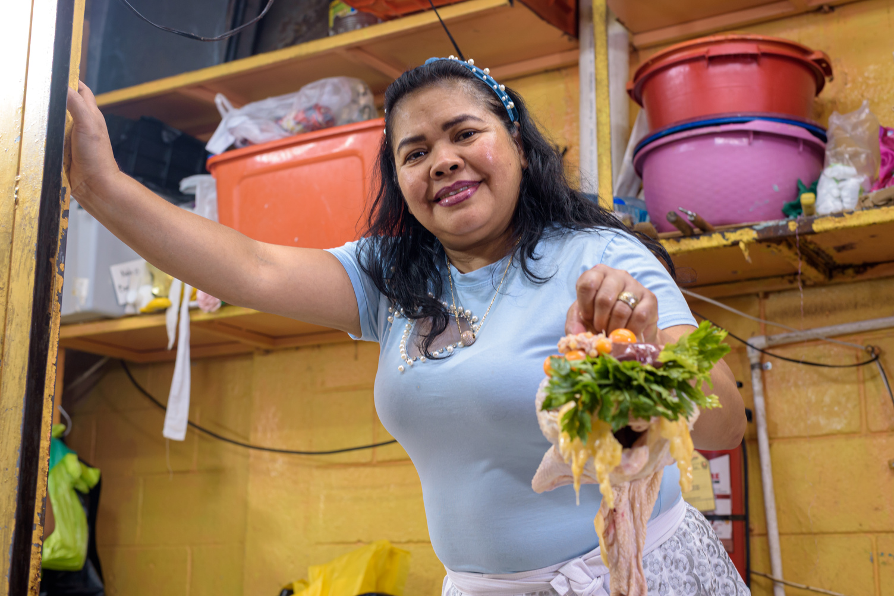
Mantener ese conocimiento también ha significado adaptarse a nuevos desafíos: hoy debe buscar proveedores fuera de San Salvador para conservar la calidad de las aves que ofrece.
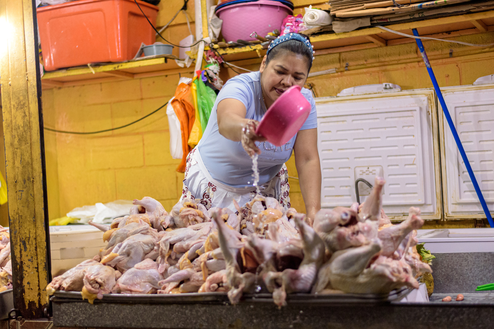
Antes de abrir, Nelly limpia el espacio de trabajo y las aves que venderá ese día. Es el primer gesto de una rutina que repite desde hace 25 años.
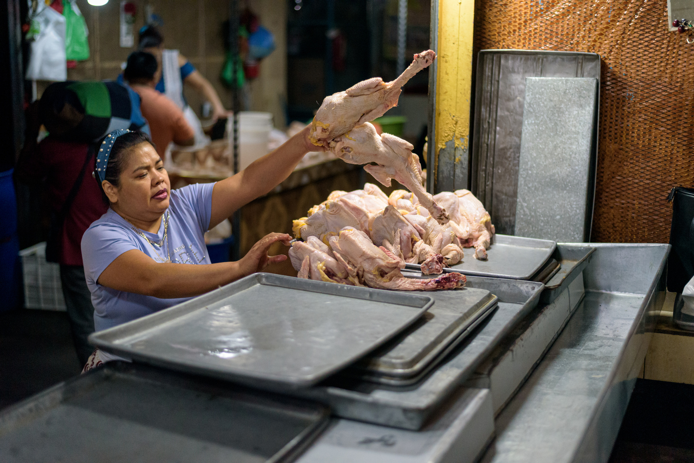
Acomodar el puesto es también un acto de memoria: cada elemento tiene su lugar, heredado junto con el oficio mismo de su madre.
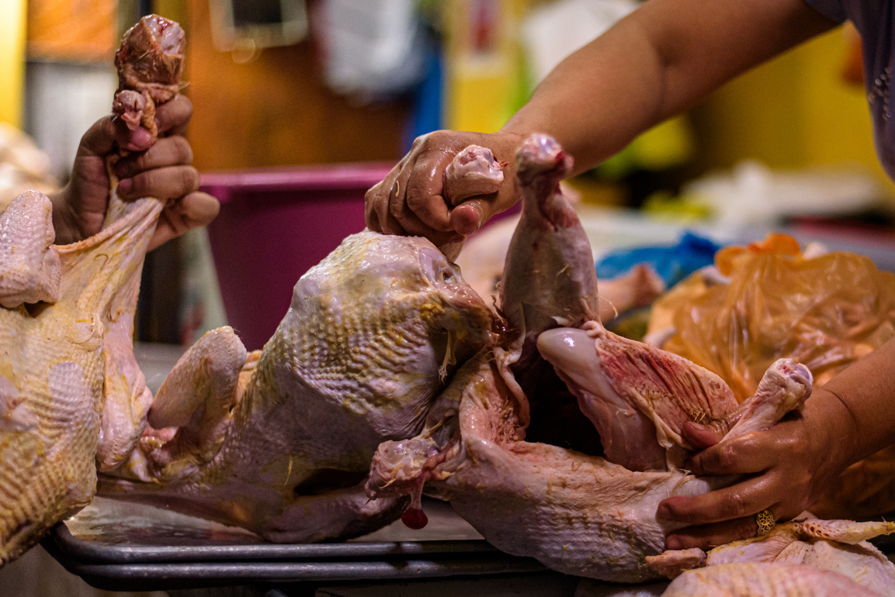
El destace se aprende por observación y repetición, no por instrucciones escritas. Las manos de Nelly conocen el punto exacto de cada corte.
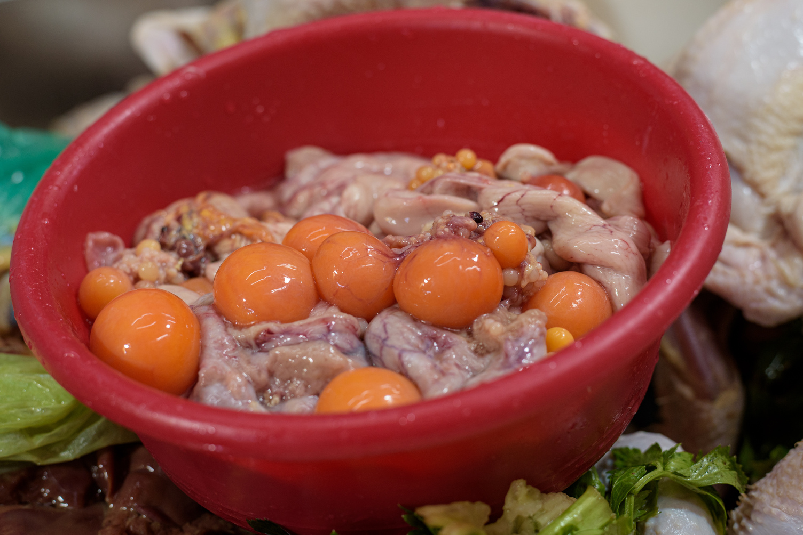
Nada se descarta sin razón. Cada parte del ave tiene un destino distinto, y Nelly lo sabe sin tener que pensarlo.
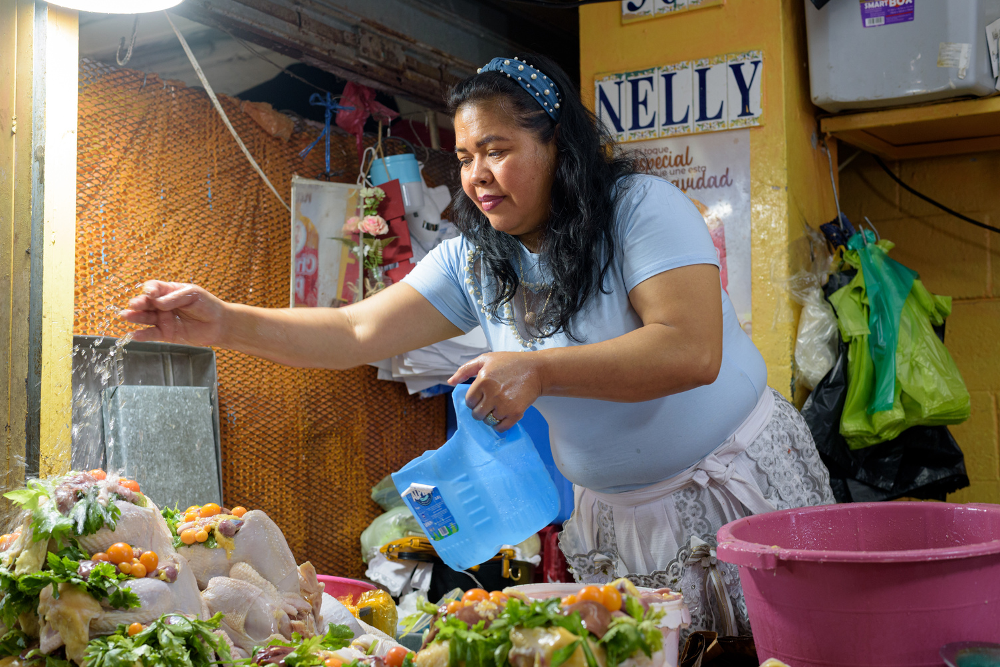
"Fue una bendición, pero también me perjudica. Los tiempos han cambiado, ya no se vende como antes y los costos son más altos", explica Nelly con seriedad.
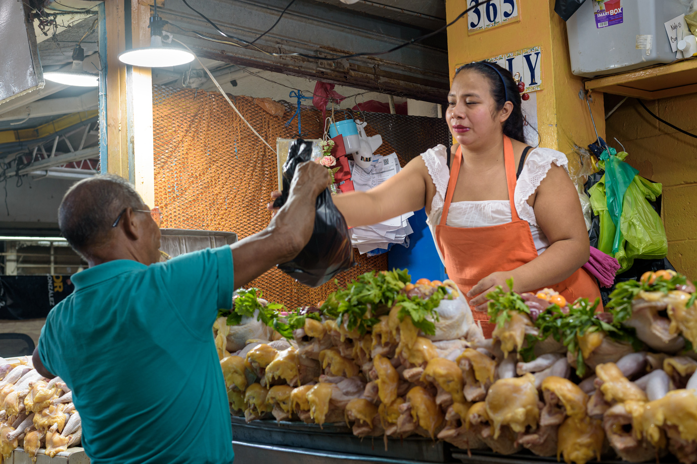
Esos cambios no son solo personales. Mientras el comercio y la vida cotidiana se desplazan hacia las zonas renovadas del centro, el mercado recibe menos compradores. Los comerciantes enfrentan mayores costos de operación y cobros administrativos, mientras un espacio que durante siglos ha articulado el trabajo, el intercambio y la alimentación pierde protagonismo frente a nuevos modelos de consumo.
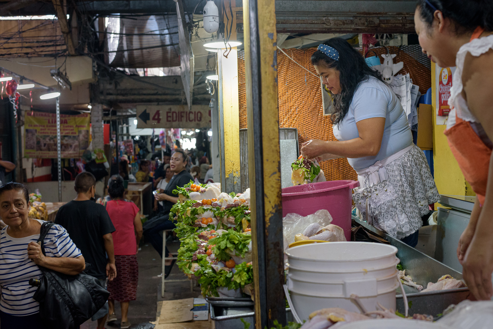
Muchas de las clientas de Nelly hacen su pedido el mismo día de la semana, año tras año — algunas la buscan desde antes de que ella tomara el puesto, cuando todavía era su madre quien despachaba. Piden por nombre, no por número de puesto.
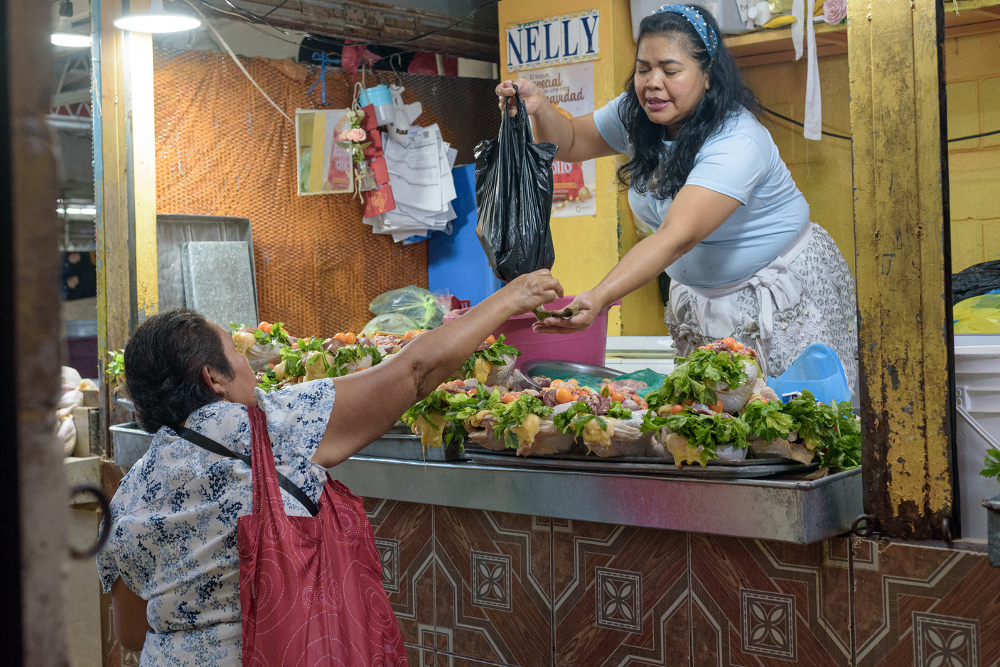
La gallina india es ingrediente central de platillos tradicionales salvadoreños: panes con gallina, sopa de gallina, gallina en alguashte, la cena navideña. El chumpipollo, más económico que el pavo, alimenta a familias numerosas en fin de año. "Hay gente a la que le encanta venir al mercado por tradición. Siguen viniendo porque Dios nos ama", dice Nelly.
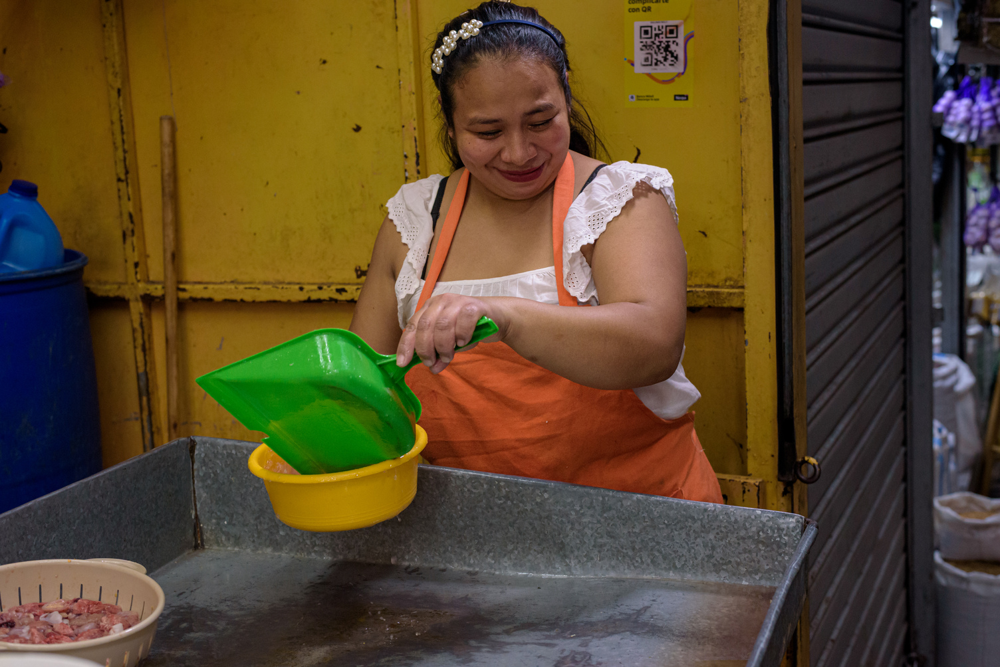
Detrás del mostrador, otro par de manos sostiene el mismo oficio — el trabajo de todo un día no lo hace una sola persona.
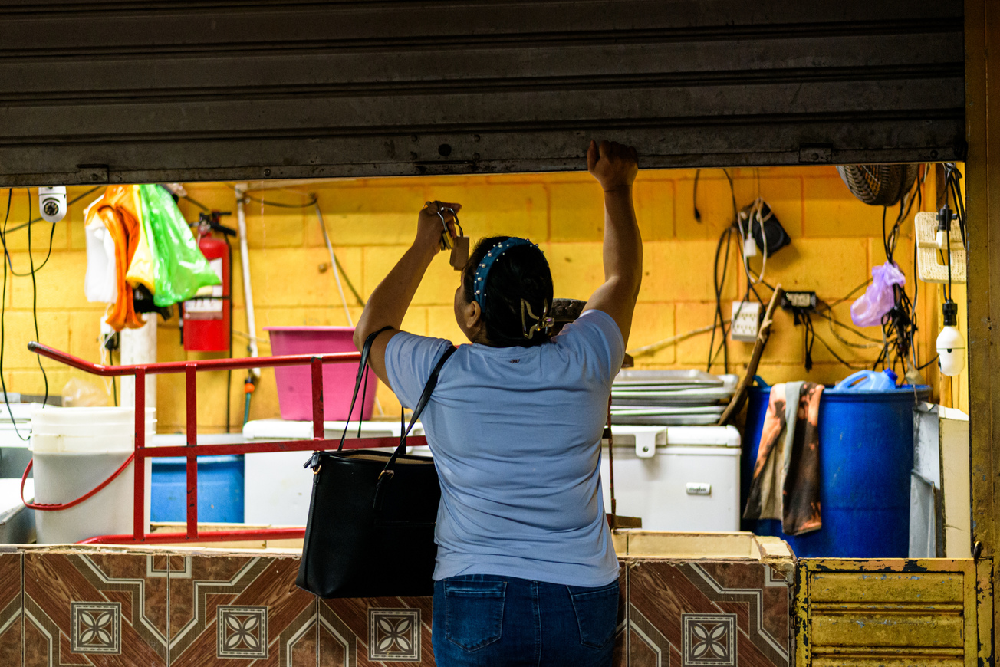
Cada mañana que Nelly vuelve a levantar la cortina no solo abre un negocio familiar. Mantiene vivo un conocimiento heredado y una forma de economía que ha dado sustento a generaciones de comerciantes. En una ciudad que redefine su centro, el futuro del Mercado Central también determinará qué lugar tendrán esas formas de vida en la memoria y en el porvenir de San Salvador.